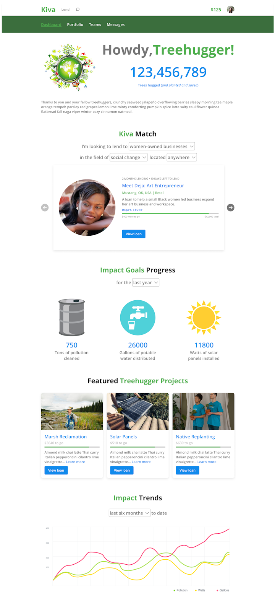
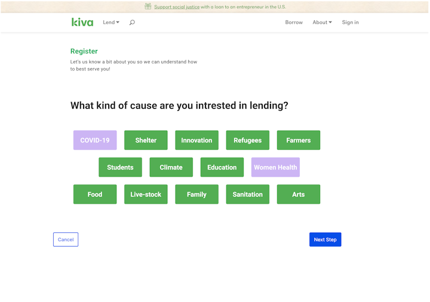
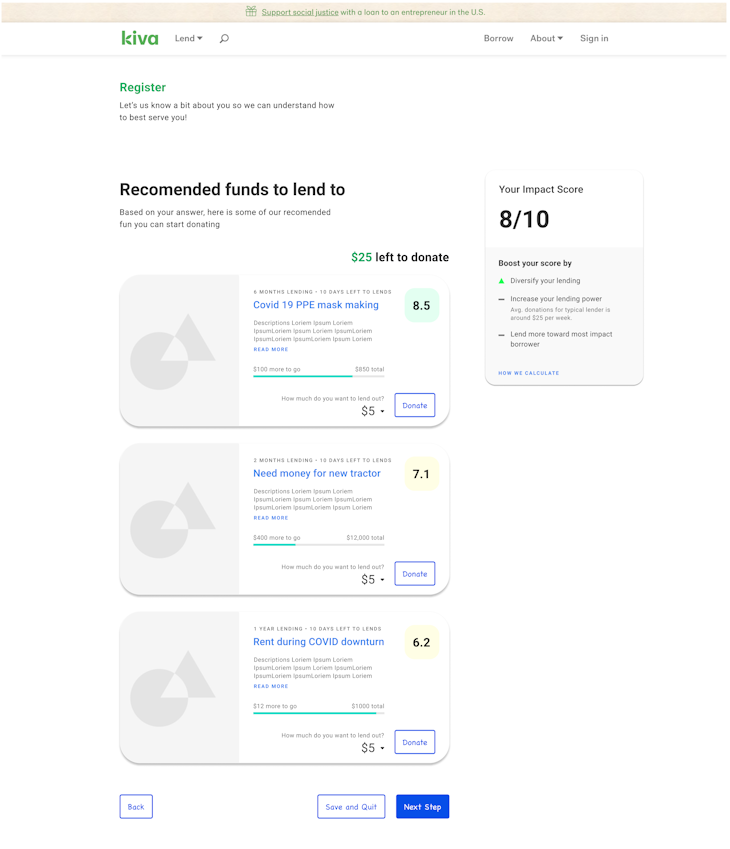

In the fall of 2021, Kiva, a non-profit organization focused on micro-lending, held a hackathon looking for solutions to some of their current difficulties. I worked with several of my former classmates and teaching assistants in developing a new feature called Kiva Communities that sought to increase user engagement with lenders and borrowers though personal stories and personal connections, so that lenders could better understand the impact their loans made.
Role
UX Designer
Deliverables
High-fidelity prototype, video presentation
Tools Used
Figma
Brief
Kiva's fall 2021 hackathon provided several questions for teams to explore solutions to. Our team chose to develop solutions to the question, "How might we show the impact of loans?"
My Role and Responsibilities
My role was one of UX designers focused on developing the design of the prototypes in Figma. I assisted with user research as well.
User Research
In order to generate a creative and effective solution to Kiva's question of "How might we show the impact of loans?", we developed a research plan to better understand the needs of Kiva itself and how past lenders have engaged with Kiva and the people they have loaned to.
Research Plan
Stakeholder interview - to establish a detailed understanding of Kiva and its strengths and challenges
Survey - to understand user habits when loaning to Kiva
User Interviews - to uncover user behavior and thoughts
Stakeholder Interview
We interviewed a representative from Kiva in order to better understand how they currently evaluate and communicate to the impact of their loans to the public, to lenders, field partners, and the recipients of loans.
Notable insights:
The main method Kiva communicates the impact of their loans is through an impact dashboard which highlights the scale of Kiva's loans and what the loans have been used for.
On a more granular scale, Kiva relies on their field partners to evaluate loan impacts and then these results are published in research papers, webinars, or online articles.
Evaluation of loan impacts varies from field partner to field partner, so it is not financially feasible to measure the impact of 200,000+ borrowers.
Lenders typically learn about the impact of a loan before they make the loan. Some borrowers do provide journal updates that come with the repayments sent to lenders' accounts each month.
User Interviews & Survey
Next, we felt the best way to understand how users would want to see the impact of the loans they've made was to create both a survey and to perform some interviews of current and past Kiva users.
We wanted to know generally:
How people become involved in micro-lending, and their motivations in doing so versus other ways of contributing.
Their experience with the micro-lending process.
How they decide which borrowers to lend to.
What impacts they want to see from the borrowers they lend to.
Interview Insights
Impact Spam
"I loaned to them years ago and they haven't stopped emailing me since."
Loan Updates
"I would like to see updates on repayment, notes on if the loan actually helped or achieved their goal."
Why Contribute?
"Appreciate the grass roots spirit of making change at a small level."
Research Results
We found that users:
Users contribute to help others and follow their stories. Users talked about being inspired to help others with things we take for granted, and the appeal of seeing an actual impact and story of continued growth.
Users want to fully know the impact of their loans to feel more invested in future loans. A common thread participants expressed is that they felt a personal connection to the borrower was missing, and many also mentioned wanting a full breakdown of their contribution with more timely updates.
Communication from Kiva is uninspiring and "spammy". Current emails and information about loans as presented by Kiva were seen as uninspiring, ineffective, and impersonal. Users wanted more personal communications, and ones that were focused on impact rather than soliciting for additional loans.
Define
After performing research and gathering insights about how users engage with music, the next step was to define a problem statement for Kiva and then develop solutions. We followed this by brainstorming solutions that would address users' needs and frustrations.
Problem Statement
A person who has made a microfinance loan in the past, needs to understand the impact of their loan. The lack of information related to the social, financial, and/or environmental impact of the loan decreases their loaner's engagement in the borrower they loaned to, and to the loan organization as a whole. How might we provide lenders with feedback on the impact of their loans in a fun and engaging way?
Feature Brainstorming
We performed a brainstorming exercise in order to develop possible solutions and then voted on those we felt we could realistically accomplish given our time constraints.
The solution we developed is called Kiva Communities, where lenders unite with other like-minded lenders to work together toward shared macro-scale goals that quantify the impact their micro-loans have.
Lenders complete a questionnaire to complete a lending profile in order to determine which types of borrowers and causes they prefer to loan to.
They are then placed into communities of other lenders who share their interest in specific types of borrowers, such as those focused on environmental causes, education, or women-led enterprises.
These communities will have macro-level goals that can easily show the impact the loaner and their community have made, along with selected personal stories from borrowers that can help communities better understand the impact of the loans that community members have made.
Elevator Pitch
Kiva Communities unites lenders around a shared cause and matches them with borrowers that align with what they stand for to personalize the impact of loaning.
Design
Prototypes
Our team divided up the design portion to generate concepts for the different features we planned on developing, such as a personal dashboard for lenders to keep track of the impact of their loans, and the lender profile creation to help lenders select loans that align with their personal interests.


Deliver
High-Fidelity Prototype
From our prototypes, we then collaborated to develop a high-fidelity prototype for presenting to the Kiva Hackathon judges.